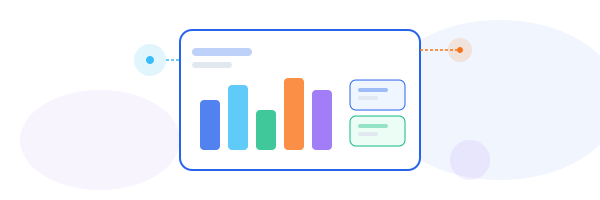

“Virtual Project Coordination — When You Need It”


“Virtual Project Coordination — When You Need It”

We specialize in providing expert virtual project coordination tailored for businesses that need professional support without the commitment of a full-time hire. Our team seamlessly integrates with the tools and processes you already use, ensuring minimal disruption and maximum productivity.

Our certified coordinators adapt to the project management tools and platforms you already use. No need to change your processes.

We handle scheduling, tracking deadlines, managing task assignments, and following up with stakeholders.

Fully remote and designed to scale with your business — whether you need extra help during busy periods or ongoing support.

Free up your managers to concentrate on strategic priorities, knowing the day-to-day details are under control.

"My VPC has transformed our business. The modern design and intuitive layout have significantly improved our user engagement."

"Boost your team's productivity. Our flexible, on-demand service keeps your projects organized and running smoothly, so you can focus on what matters most."
Get professional coordination support exactly when you need it, making project success easier and more efficient.
Get in Touch